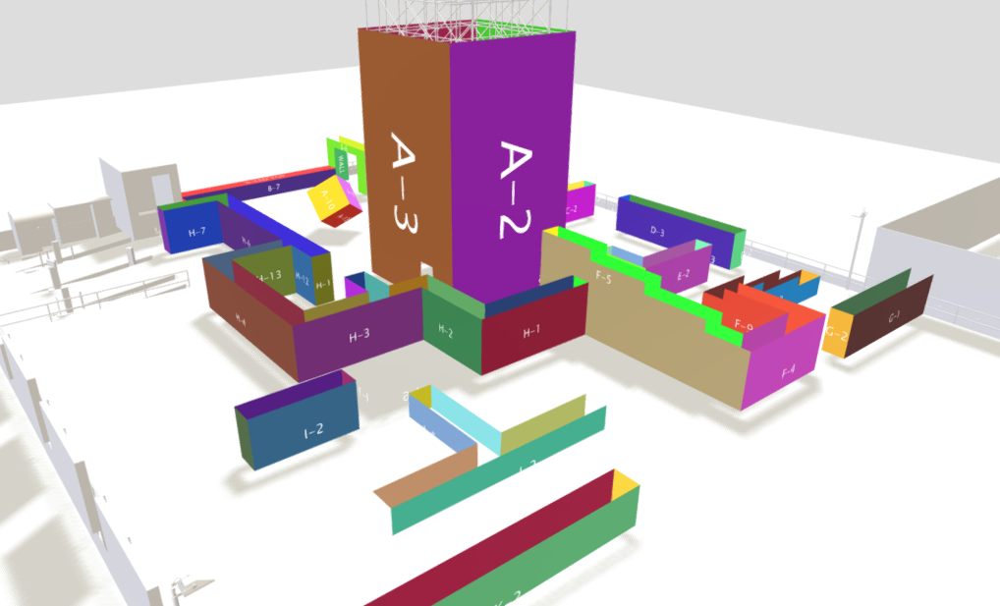
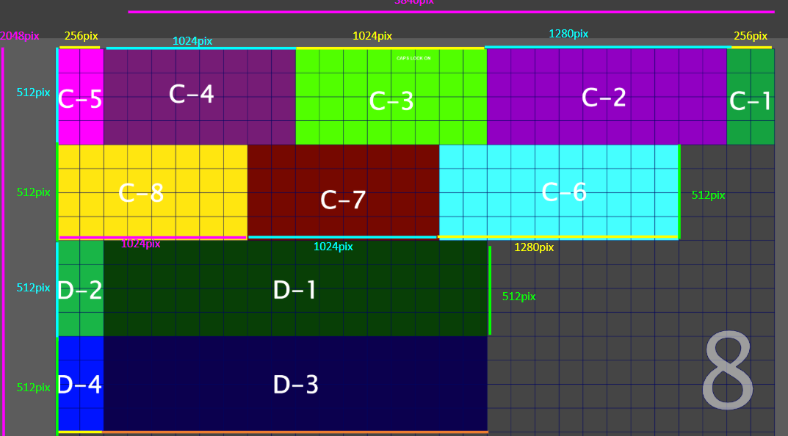
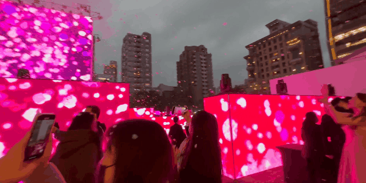

Taipei Lantern Festival (2023)
- LED maze installation with seasonal and AI data-driven visuals -
Overview
Taipei Lantern Festival: Key to the Maze (光鑰未來) is a massive LED maze installation that combined seasonal themes with AI data-driven visuals. The experience transformed a public space into a rhythmic, glowing journey through light and data.
My Role
I served as Artist and Director for the opening sequence of the installation (PXBear / Four Seasons). My responsibilities included designing the visual aesthetics, establish/create production pipeline, providing test environment in Unity, ensuring all the narratives was captured through high-impact motion graphics, supervised cross-company artists for production and creating the PXBear opening sequence for the client.
Highlights
- Directed the high-energy opening sequence for a major public festival.
- Set art style, color and tone with the PX Bear opening sequence and four seasons sequence.
- Created PX Bear opening sequence.
- Blended traditional festival motifs with modern 3D naked eye animation.
- Managed visual consistency across massive LED surfaces output.
Art & Process


This is a project that is massive in scale in its required format. It takes around 2700 pieces of LED display to assemble a huge playground of LED maze that takes up around 110 square meters situates next to the Taipei 101 (the location is now four season hotel). It's a LED light show that has a total runtime of an hour that loops during the days it is featured in 2023 Lantern Festival. Moonshine Studio collaborated with Ouchhh studio for the digital contents of the show. In its 60 minutes runtime, Ouchhh provided 45 minutes of their footages while Moonshine Studio will create a brand new opening sequence that features its sponsor PXMart and Four Season Hotel.

Working for the Creative Director, FREEs CEO FENG CHIEN CHANG (二馬哥), he provided the general idea and requirements for the show of what needs to be appearing in the first 15 minutes of runtime. A show that features the popular mascot of PXMART - PXBEAR and a four season show that features classical symphony 'Four Season' from Vivaldi. We were given a lot of creative freedom as I was tasked to realise this 15 minutes into a possible show that rivals the contents from Ouchhh. It was also decided that the format of the LED show will be structured as a maze with a huge 4 meter high monolith like huge LED block in the middle that overlook the rest of the maze.


Challenges:
Quickly, from the early 3D mockup models and LED output sizes of contents, it's apparent as an art director, I am presented with two major challenges. The first is how can we produce huge resolutions of 44 millions of pixels with a runtime of 15 minutes that's scattered across with a vastly different format. Another challenges is the content itself needs to be fun and engaging so that we can rival the footages provided from Ouchhh. Sometimes it's challenges like this that push and forces you to think outside of the box because there is noway we can accomplish this with the traditional 3D rendering method. Oh yeah, on top of all this did I mention we need to feature a naked eye 3D display of PXBear in the monolith?

Ideas:
First, in the concept stage I came up with the idea of showing PXBear performing dances in a festival way that cheers the visitors and celebrate the festival in a joyful way. Based on the maze format where the walls are much wider than its height. I've come up the idea of scrolling stationary contents and revealing different set pieces or props to make the wall interesting, while the monolith will features a large version of the PXBear dancing as the center piece to attracts all the attention. Second, for the Four Season contents that's following the PXBear. We've decided in order to generate 12 minutes of the contents within timeframe it is best to resort in abstraction and particles. We have two great inhouse VFX artist that are particles gurus. So it is clear to me that we can work the particles and follow the music beats to make the different particles alive without just being totally random. It is also important that I've decided the different flower and color represent each season to make them stands out on its own and have enough contrast for their own flavor and personalities.

Test Environments:
Working with any huge projects as an art director in a team, that a proper standards, pipeline and test environment properly setup early in the pre-production is vital to the sucess of the project. I was aware the importance of making sure everything from a test environment for our artists to final output naming convensions that needs to be standardized first, are all ready and making sense. As any changes that could affecting the pipeline will greatly increase the time that's wasted on making changes instead of creating. So an early prototype was built in Unity to accommodate our artists to utilize the prototype to visualize all of their work in the final output. We were using Unity's Render Texture and hook up multiple cameras across the scene that capture different location of the art to simulate the final render. And we used realtime rendering as output from Unity directly (frame by frame) as it is much faster compared traditional rendering from Maya/Arnold considering the huge size of the total resolution and running length that we need to cover. Once we can make the prototype work properly, it is apparent that issues with difficulties of visualizing the entire maze while working as the artist was solved instantly. As with Unity it is what you see is what you get in the final overview of the entire maze in realtime. (The image above is the simulation in Unity)

PXMart/PXBEAR:
When the art direction, concepts, prototypes, pipelines and output formats are finalized, I moved on into creating the most challenging piece as the PXBEAR performance. It is difficult because it involves a direct image of the client's branding, which always requires extra attention and care to so we can get client's approval with minimum iterations. I came up with the idea of moving instruments and PXbear statues like fighting games background. It worked surprisingly well in this special 'maze' format. I created all the models, textures, designs, particles and shaders for the entire wall animation for the entire 3 minutes runtime.


3D PXBEAR:
The last pieces to the final show is the naked eye 3D PXBEAR performance projection on the monolith. It was created in Unreal and used a modified camera to project the 3D effect (2 parallax camera). Once we figure out the camera setting, it was simple to create the rest of the show that contains within the bounding box of the camera to have the convincing 3D effect.

Closing:
Looking back, it was a really fun project although it meant a lot of overtime since it had a really short delivery schedule (and it overlaps on New Years Eve holiday, yuck). But every challenges or potential issues were pretty much ironed out during the pre-production phase and the production itself were relatively smooth compared to some of my other projects. The team and I worked really well and supported each other, everyone was super excited and keen on working with this huge project to show the world of what we are capable of. The end result was nothing short of amazing and we did produce something that truly rivals what Ouchhh studio had. Awesome!
Gallery

Project Details
Role: Artist, Director (PXBear, Four Season)
Type: Public Light Installation / LED Maze
Year: 2023
Studio: Moonshine Studio
Tools & Tech: Adobe Creative Suite, Unity Engine, LED Display Systems